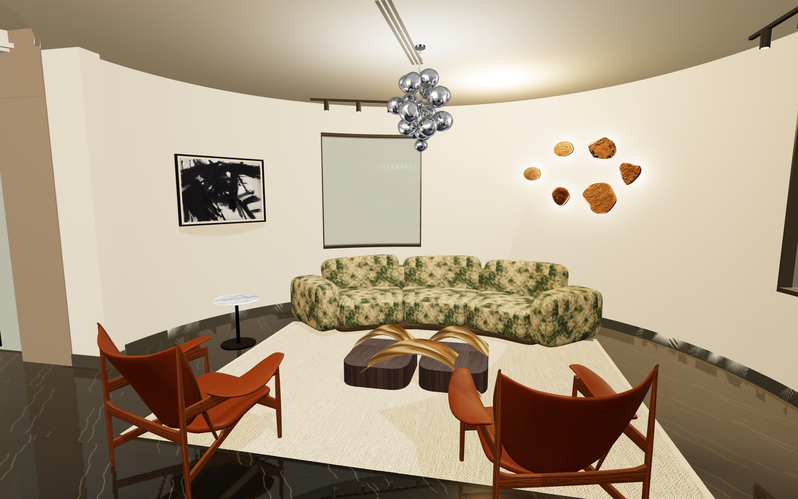
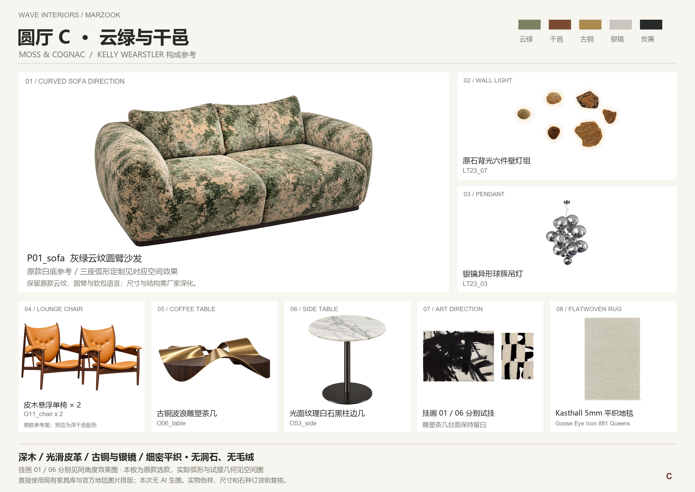

01 / Franz Kline · Siskind, 1958
黑色笔势更集中，横幅接续沙发的展开感。使用博物馆可定制的约 1016 × 721 mm 图像尺寸，加细黑框与暖白卡纸。
DIA 官方产品页 ↗TWO NEW COMPOSITIONS × TWO ARTWORKS
保留圆厅的弧线与绿色基调，重新搭配单椅、茶几、边几和吊灯。
家具库原款优先 · 无洞石 / 无毛绒 · 新方案先审效果，再按确认结果同步 VR
C / MOSS & COGNAC

SIDE BY SIDE
每组只改变画作，家具和视角保持一致。
YOUR COLLECTION, RECOMPOSED

ART & PRODUCT SOURCES
黑色笔势更集中，横幅接续沙发的展开感。使用博物馆可定制的约 1016 × 721 mm 图像尺寸，加细黑框与暖白卡纸。
DIA 官方产品页 ↗黑白与自然纸色的分格呼应绑带模块和相邻屏风。选用可购的 70 × 100 cm 竖幅，保持完整构图。
出版方产品页 ↗沿用 Kasthall 5 mm 平织地毯和库内原石壁灯。家具试摆尺寸、弧形沙发分段与厂家实物仍须复核；画框用离墙支架贴合弧墙。
完整选款与来源 ↗画面使用现有客户建筑、库内原图与模型、按原款制作的试摆几何；部分背面细节含推定。C 的银镜吊灯在本轮静态效果中使用原款透明图贴片。已有 A / B 及客户 VR 保留，新方案待确认后再同步。